Debian provides many options for installation.
For the convenience, we will download [DVD version: debian-8.2.0-amd64-DVD-1.iso][DVD] in this manual.
After downloading the CD/DVD image, you need to write them directly to an USB stick or a CD/DVD.
Create a bootable CD/DVD is as easy as burning your favorite movie into your DVD. Almost all modern operation systems have som built-in disc burner. To create your own bootable device, follow the approaches below:
Finally, your CD/DVD turns into a "bootable device".
If you do not have any blank CD at hand, you can use an USB stick as a bootable device.
After the process completes, you will get a reusable bootable USB stick.
BIOS is a built-in firmware to perform hardware initialization during startup on PC. One of its main functions is to select which devices are potential bootable devices, and in which order booting from them will be attempted. Thus, you should configure your bootable device first for the boot priority.

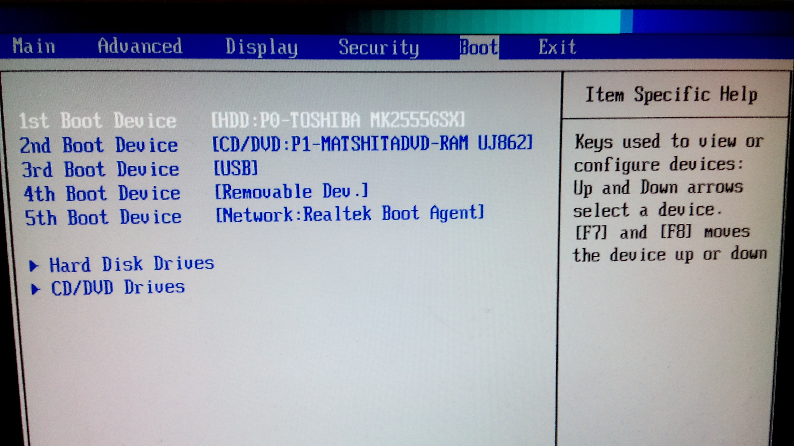
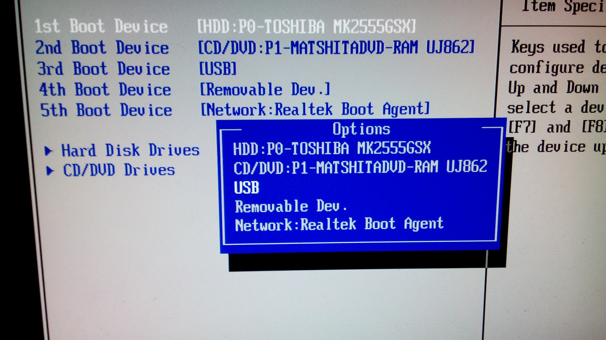
Once your computer restarts, it will boot using your new boot order priority.
NOTE: While different computers use different BIOS keys and have different BIOS layouts, the process is similar on most computers.
Here comes the most important part of this manual. Assumed you already booted your machine via the bootable device. You will enter the install welcome page, we will choose normal Install mode:

It is important to ensure your system time, keyboard layout is correct during the installation.
In this manual, we choose:
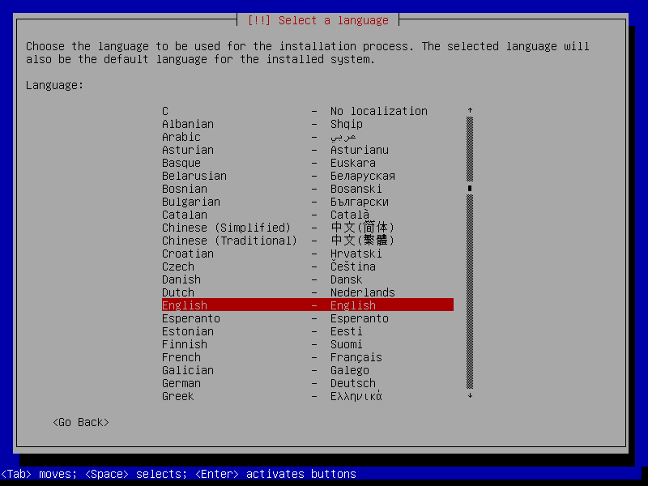
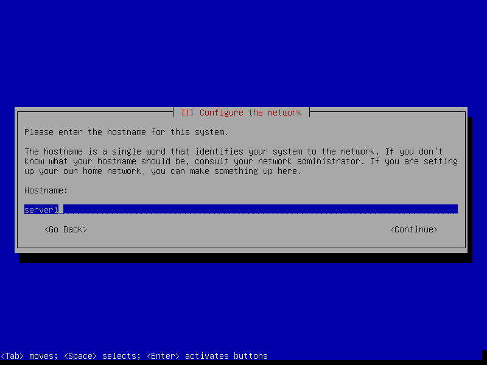
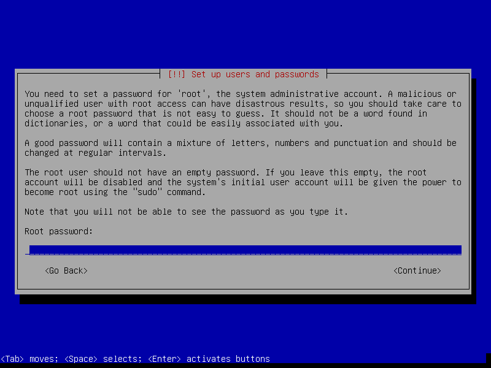

The design of partition table varies cases by cases. Assumed that you are going to setup a server for R computing. You want to mix a 5 TB HDD and a 1 GB SSD for these two aims:
A scheme would be like this:
The recommended size of the partitions:
/ (root) : > 20 GB Traditionally, / (root) contains the [/usr][/usr] directory, which can grow significantly depending on how much softwares installed (softwares installed in /usr usually be shared among all users.)
/var : 8-15 GB This partition may contain mails, cache, and other user programs and daemon. Seperate it from / (root) can reduce danger and wear of your SDD.
/tmp: > 2 GB This partition stored temporary files. For instance, your downloaded a Debian DVD image via Firefix with open option. It would download to /tmp. If you are going to do simulation with lots of temporary output files, you can save them inside /tmp. The recommanded size is not less 2 GB.
swap : [varies] Swap area is so called virtual memory. The old general rule for swap partition size was to allocate twice the amount of physical RAM. If a sufficient amount of your physical RAM is available, it is possible to have a smaller partition size of swap area.
/home : [varies] It is typically where user data, downloads, and multimedia reside. On a desktop system, /home is typically the largest filesystem on the drive.
Finally, your partition table would look like this:
SCSI1 (0,0,0) (sda) - 1.0 GB VBOX VIRTUAL SSD
#1 primary 500.0 MB B f ext4 /boot
#2 primary 5.0 GB f ext4 /
#5 logical 100.0 GB f ext4 /usr
SCSI2 (1,0,0) (sdb) - 5.0 TB VBOX HARDDISK GPT
#1 primary 30.0 GB f ext4 /var
#2 primary 100.0 GB f swap swap
#3 primary 20.0 GB f ext4 /tmp
#4 primary 4.0 TB f ext4 /home
#5 0.7 TB FREE SPACE

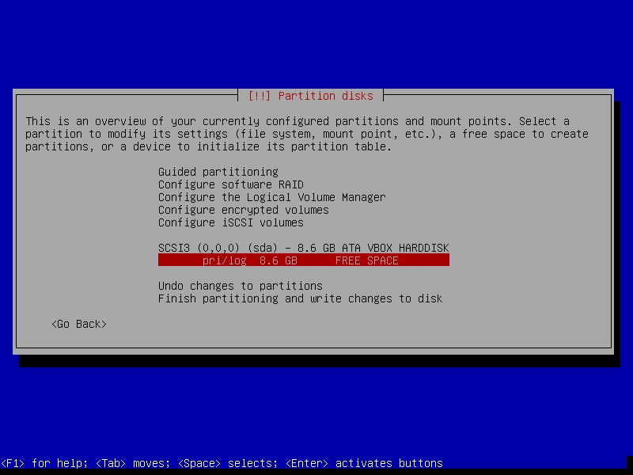
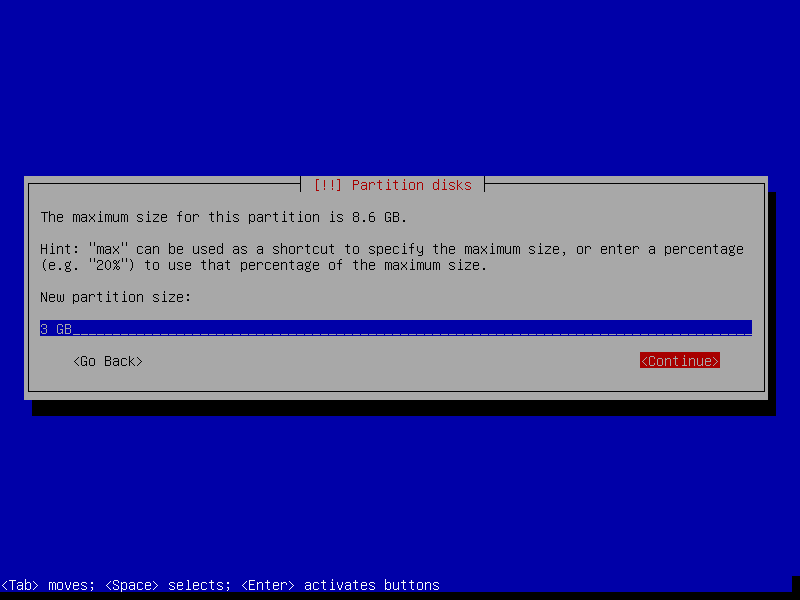

A well developed Package Manager can be the soul of a linux distribution, bring much convenience to download open-source software in minimum typing strokes. However, we will config our package manager later. 1. Skip scanning another CD/DVD and network installation.
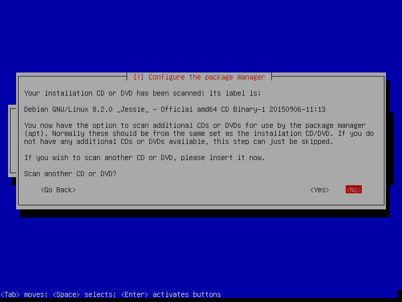
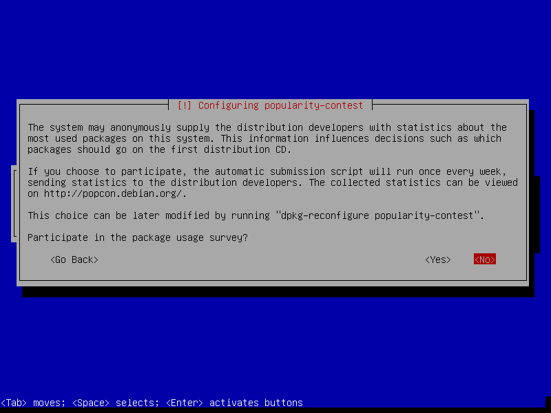

By default, the amd64 boot loader "grub" will be installed into the Master Boot Record (MBR), where it will take over complete control of the boot process.


Although you've succeed the installation, you cannot do anything without configuring your source of your package manager.
Most Debian-based systems provied a powerful package manager called Advanced Packaging Tool, or APT. We can easily use apt-get command to install/remove open-source software in the Debian repository.
Before starting the configuraion, check the network connection in advance:
test@server$ ping www.gooogle.comIf you receive something like, it mean your connection is well:
PING www.google.com (74.125.203.105) 56(84) bytes of data.
64 bytes from th-in-f105.1e100.net (74.125.203.105): icmp_seq=1 ttl=46 time=15.6 ms
64 bytes from th-in-f105.1e100.net (74.125.203.105): icmp_seq=2 ttl=46 time=15.4 ms
64 bytes from th-in-f105.1e100.net (74.125.203.105): icmp_seq=3 ttl=46 time=15.6 msOpen /etc/apt/source.list We will use vi to edit source.list. If you are not familiar to vi, use nano to substitube for vi in the command.
test@server$ sudo vi /etc/apt/source.listFor an archieve mirror of Debian 8 (jessie) repository, simply add following lines into sourece.list.
deb http://<favourite-debian-mirror>/debian/ jessie main
deb-src http://<favourite-debian-mirror>/debian/ jessie mainNOTE: You need to substitute <favourite-cran-mirror> by one of the mirror URLs listed in the mirror list. For example: deb http://debian.csie.ntu.edu.tw/debian/ jessie main
Comment out the sources from CD/DVD In the source.list file, there are some CD/DVD sources reserved for dealing some situation without network in the future. For now, they are useless and should be commented out:
# deb cdrom:[Debian GNU/Linux 8.2.0 _Jessie_ - Official amd64 CD Binary-1 20150906-11:13]/ jessie contrib main
# deb cdrom:[Debian GNU/Linux 8.2.0 _Jessie_ - Official amd64 CD Binary-1 20150906-11:13]/ jessie contrib mainAfter all the commands above, you can install whatever your want in the Debian Repository.
If you are not comfortable with command line interface, you can download your favorite desktop environment such as Gnome or KDE from the Debian repository. Following are some commands to install them.
The GNOME Desktop Enviroment is an fantastic-looking, modern, and useful desktop environment. GNOME is both free and one of the most widely used desktop environments on the GNU/Linux operating system.
To install it, first make sure that tasksel and aptitude are installed:
test@server$ sudo apt-get install aptitude taskselThen, install the GNOME task:
test@server$ sudo tasksel install gnome-desktop --new-installLXDE is a free desktop environment with comparatively low resource requirements. It is recommanded if you only need basic operation with graphical interface.
To install a complete Debian LXDE desktop environment, execute commands below:
test@server$ sudo apt-get update
test@server$ sudo apt-get install task-lxde-desktopAfter the installation, you can simply enter the desktop environment by execute the command:
test@server$ startxNOTE: Click here for more desktop environment installation guide.
Before starting any simulations or programming, you need to install the following software:
While any package would have been tested thoroughly before included in a Debian stable release, the latest version of R and other packages won't be included in the repository. Hence, you need to add some additional repositories manually.
The following steps are all done in command line (or terminal emulator).
test@server$ sudo apt-get update
test@server$ sudo apt-get install vimFor downloading latest version of R, adding additional repositories to debian repository list is required.
For a backport of latest R to Debian 8 (jessie), simply open /etc/apt/sourece.list.
test@server$ sudo vim /etc/apt/source.listThen add following lines into /etc/apt/sourece.list.
deb http://<favourite-cran-mirror>/bin/linux/debian jessie-cran3/
deb-src http://<favourite-cran-mirror>/bin/linux/debian jessie-cran3/NOTE: You need to substitute <favourite-cran-mirror> by one of the mirror URLs listed in the mirror list.
For example: deb http://cran.csie.ntu.edu.tw/bin/linux/debian jessie-cran3/.
Fetch and import Debian backports archives on CRAN (CRAN Debian archive) with key ID 381BA480.
test@server$ sudo apt-key adv --keyserver keys.gnupg.net --recv-key 381BA480Finally, install R.
test@server$ sudo apt-get update
test@server$ sudo apt-get install r-base r-base-devAfter the installation, execute this command to check the version of R in your server is up-to-date.
test@server$ R --versionNormally the client and server are installed by default. If not it suffices to run:
test@server$ sudo apt-get update
test@server$ sudo apt-get install openssh-client openssh-serverThe main configuration files are in the directory /etc/ssh:
ssh_config : client configuration file sshd_config : server configuration file
We will only cover the server configuration in this manual.
Open /ect/ssh/sshd_config for editing.
test@server$ sudo vim /etc/ssh/sshd_configFor security, change the listening port instead of default TCP port 22 as such:
Port 10022Ensure that PermitRootLogin is set to no in sshd_config (we use sudo-user only):
PermitRootLogin noStart your SSH service.
test@server$ sudo /etc/init.d/ssh startNOTE: After any configuration, always restart server to apply your changes.
test@server$ sudo /etc/init.d/ssh restartRStudio: a integrated development environment (IDE) for R. Also free, open source and multi-platform. To start/stop/restart Rstudio server, use followings commands:
To download and install RStudio Server. Execute the following commands. Note that gdebi should be installed first.
test@server$ sudo apt-get update
test@server$ sudo apt-get install gdebi-core
test@server$ wget https://download2.rstudio.org/rstudio-server-0.99.491-amd64.deb
test@server$ sudo gdebi rstudio-server-0.99.491-amd64.debTo verify your installation, excute following command:
test@server$ sudo rstudio-server verify-installationSimple commands for start/stop/restart server
test@server$ sudo rstudio-server stop
test@server$ sudo rstudio-server start
test@server$ sudo rstudio-server restartThe default port for Rstudio server is 8787. That means any can connect to the server through the URL http://
If you wish to change to another port, you should add following configuration into /etc/rstudio/rserver.conf file. For example:
www-port=18787Note that after any configuration, always restart server to apply your changes.
test@server$ sudo rstudio-server restartOther tips: - The users in Rstudio server are references to users of system. - Each user needs to be created with a home directory. - More tips on Rstudio server support.
MariaDB is one of the most popular database server in the world. Being a community-developed fork of MySQL RDBMS, MariaDB intended to remain free under the GNU GPL license. To start/stop/restart MariaDB server, please read more:
First download MariaDB client and server
test@server$ sudo apt-get update
test@server$ sudo apt-get install mariadb-client mariadb-serverThen, set the password for root. 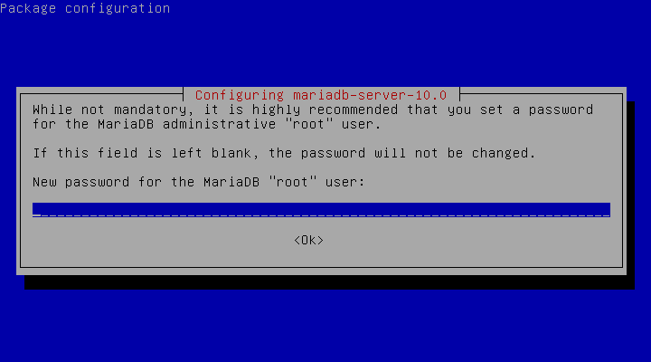
Finally, start MariaDB server
test@server$ sudo /etc/init.d/mysql startSimple commands for start/stop/restart server:
test@server$ sudo rstudio-server stop
test@server$ sudo rstudio-server start
test@server$ sudo rstudio-server restartMariadb setup initial databse in /var/lib/mysql by default. If you want to manually configure your installation, go to the secure installation:
test@server$ sudo mysql_secure_installationIf you have set a strong password, skip the first step.
NOTE: RUNNING ALL PARTS OF THIS SCRIPT IS RECOMMENDED FOR ALL MariaDB
SERVERS IN PRODUCTION USE! PLEASE READ EACH STEP CAREFULLY!
In order to log into MariaDB to secure it, we'll need the current
password for the root user. If you've just installed MariaDB, and
you haven't set the root password yet, the password will be blank,
so you should just press enter here.
Enter current password for root (enter for none):
OK, successfully used password, moving on...
Setting the root password ensures that nobody can log into the MariaDB
root user without the proper authorisation.
You already have a root password set, so you can safely answer 'n'.
Change the root password? [Y/n]Recommand to remove anomyous users for security.
By default, a MariaDB installation has an anonymous user, allowing anyone
to log into MariaDB without having to have a user account created for
them. This is intended only for testing, and to make the installation
go a bit smoother. You should remove them before moving into a
production environment.
Remove anonymous users? [Y/n]For security issue, do not allow remote login for root.
Normally, root should only be allowed to connect from 'localhost'. This
ensures that someone cannot guess at the root password from the network.
Disallow root login remotely? [Y/n]Removing or not is all your choices.
By default, MariaDB comes with a database named 'test' that anyone can
access. This is also intended only for testing, and should be removed
before moving into a production environment.
Remove test database and access to it? [Y/n]Finally, flush all changes now.
Reloading the privilege tables will ensure that all changes made so far
will take effect immediately.
Reload privilege tables now? [Y/n]MariaDB save all databases in /var/lib/mysql/ by default. If you aim to store Terabytes of data, your /var partition might get full. To avoid this, you can modifiy some MariaDB variables.
First, stop MariaDB service.
test@server$ sudo service mysql start Copy the existing data directory. Note that
test@server$ sudo cp -R -p /var/lib/mysql /newpath/by/your-choiceEdit the MariaDB configuration file
test@server$ sudo vim /etc/mysql/my.cnfLook for the entry for datadir (usually under [mysqld]). Change the path (default: /var/lib/mysql) to your new data directory.
[mysqld]
...
...
other config
...
datadir = /newpath/by/your-choiceRestart MariaDB server.
test@server$ sudo service mysql startIn addition, you can also change port for client under [client] group configuration. Default: 3306
[client]
port = 13306MariaDB provide a command line tool. To enter your database on localhost, you must explicit input user and password.
test@server$ mysql -u root -pIf you succeed, you would see this:
MariaDB [(none)]> To create a super user that can remotely login, follow the commands in MariaDB shell:
MariaDB [(none)]> CREATE USER your_super_user@'%' IDENTIFIED BY 'your-Pa$$w0rD';Then give all usage to the super user on all database (include create/drop other users)
MariaDB [(none)]> GRANT ALL PRIVILEGES ON *.* TO your_super_user@'%' with grant option; For more management of accounts and usages. Please read the [official documentation][grant]. [grant]: https://mariadb.com/kb/en/mariadb/grant/
Using GUI tools for daily database management will save your live from works. Here are some recommandation:
MySQL Workbench: MySQL Official GUI Tools. Provides many advanced functions.
phpMyAdmin: A Web interface tool written in PHP. Can I/O data to various formats (CSV, XML...).
HeidiSQL: A lightweith tool for database management. Has protable version. Windows only.
SQLyog Community Edition: Community edition of SQLyog MySQL administration tool.
Mariadb is under GPL license. Some other language need a less strict license version to connect to MariaDB server. Hence, install LGPL version library of client-side.
test@server$ sudo apt-get update
test@server$ sudo apt-get install libmariadb-client-lgpl-devWith this library, you can user almost all SQL-like commands via popular languages such as R:
if (!require(RMySQL)) install.package("RMySQL")
# Connect to a database
conn <- dbConnect(MySQL(), dbname = "test")
print(conn)## <MySQLConnect:0,0>Write data.frame into database. Then read it.
dbWriteTable(conn, name = "mtcars", value = datasets::mtcars)
test_mtcars <- dbReadTable(conn, "mtcars")
dim(test_mtcars)## [1] 32 11SQL query statement
res <- dbSendQuery(conn, "SELECT * FROM mtcars")
dbFetch(res, n = 3)## row_names mpg cyl disp hp drat wt qsec vs am gear carb
## 1 Mazda RX4 21.0 6 160 110 3.90 2.620 16.46 0 1 4 4
## 2 Mazda RX4 Wag 21.0 6 160 110 3.90 2.875 17.02 0 1 4 4
## 3 Datsun 710 22.8 4 108 93 3.85 2.320 18.61 1 1 4 1dbClearResult(res) # Clear the unused query results.Remove table and disconnect
dbRemoveTable(conn, "mtcars")
dbDisconnect(conn)To forward ports, you first need to understand about what your router does.
Your router has a function called Network Address Translation, or NAT, built-in. Inside your network, computers get their own addresses like 192.168.1.100. These addresses are called "private" or "reserved" addresses which automatically assigned by your home router via DHCP. A computers can communicate with router and with each other via its own address.
However, these "private" addresses could only be recognized within private network. It will be failed if others want to connect to a specific computer via an address like 192.163.1.100. Therefore, we should change it from the private IP of the computer to the public IP of the router. This is so called the port forwarding.
Configuration of port forwarding often varies from routers to routers. In this munual, we would use D-Link for demonstration.


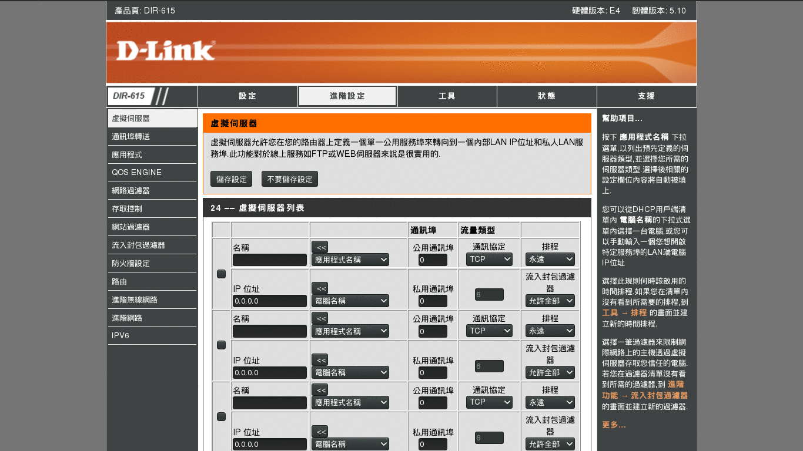
NOTE: Connecting to your Rstudio server via TCP/IP is exactly the same thing as connecting to your SSH server. The only thing need to change is the port you forwarding. (Default port of Rstudio server is 8787.)